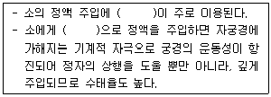
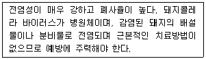
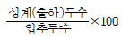
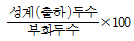
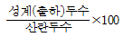
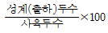
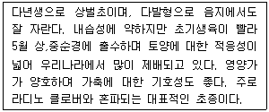

축산산업기사 (2020-06-06 기출문제)
1과목: 가축번식 육종학
1. 3원교잡종 생산 시, 1대 잡종 생산에서 주로 쓰이는 어미 돼지의 품종은?
- 폴란드 차이나(Poland China)
- 햄프셔(Hampshire)
- 랜드레이스(Landrace)
- 듀록(Duroc)
(정답률: 83%)

2. 소의 번식장해를 유발하는 전염성 질병은?
- 프리마틴
- 백색 처녀우병
- 난소낭종
- 브루셀라병
(정답률: 81%)
3. 후대검정의 정확도를 높이는 방법으로 가장 거리가 먼 것은?
- 후대검정소를 설치 운영한다
- 검정대상 종축의 자손수를 많게 한다
- 검정 수가축에 교배되는 암가축을 임의로 배정한다
- 자손 중에서 능력이 떨어지는 개체는 제외시키고 평가한다
(정답률: 70%)
4. 가축들의 교배적기에 관한 설명으로 옳지 않은 것은?
- 소는 발정중기부터 발정종료 후 6시간 경 까지이다
- 돼지는 수퇘지의 승가를 허용하는 시점으로부터 10시간부터 25시간 사이이다
- 면양은 발정개시 후 20시간~25시간 전후이다
- 말은 직장검사를 한 경우 배란와(ovulation fossa)가 닫혀 있는 시기로 배란 후 3일 째이다
(정답률: 69%)
5. 닭의 개량에 있어 산란능력과 가장 거리가 먼 형질은?
- 초산일령
- 산란강도
- 산란지속성
- 생존율
(정답률: 80%)
6. 비육우의 생산성 향상과 가장 관계없는 교배법은?
- 품종간 교배
- 퇴교배
- 근친교배
- 품종간 윤환교배
(정답률: 73%)
7. 암소의 일반적인 성성숙 일령은?
- 3~7개월
- 8~12개월
- 13~19개월
- 20~24개월
(정답률: 75%)
8. 다음 중 ( )에 알맞은 내용은?

- 질내주입법
- 겸자법
- 질경법
- 직장질법
(정답률: 79%)
9. 품종간교배를 실시할 때 번식용 암소두수의 감소를 방지하고 매 세대 생산되는 송아지의 균일성을 유지하기 위한 교배법으로 가장 바람직한 것은?
- 1대 잡종의 이용법
- 퇴교배법
- 3품종 종료교배법
- 종료윤환교배법
(정답률: 62%)
10. 일당증체량이 600g인 암퇘지와 일당증체량이 900g인 수퇘지를 교배시켜 여기서 생산된 자손의 일당증체량이 855g이였다고 할 때 잡종강세 발현율은?
- 8%
- 14%
- 20%
- 26%
(정답률: 66%)
11. 황체기에 있는 젖소에 프로스타글란딘(PGF2a)을 투여했을 때 약 몇 일만에 발정이 일어나는가?
- 1일
- 3일
- 7일
- 10일
(정답률: 76%)
12. 선발에 의한 유전적 개량량을 크게 할 수 있는 방법이 아닌 것은?
- 선발차를 크게 한다
- 세대간격을 짧게 한다
- 환경적 변이가 커야 한다
- 형질의 유전력이 커야 한다
(정답률: 79%)
13. 순종교배에 속하지 않은 것은?
- 근친교배
- 누진교배
- 무작위교배
- 동일 품종 내의 이계교배
(정답률: 53%)
14. 소의 태아가 만출된 후 후산이 배출될 때까지의 정상적인 시간은?
- 3~8시간
- 8~12시간
- 12~24시간
- 24~36시간
(정답률: 58%)
15. 닭의 성장률을 측정하는 대표적인 척도는?
- 정강이의 길이
- 부리의 길이
- 근육발생량
- 지방축적량
(정답률: 84%)
16. 가축의 발정 징후에 해당되지 않는 것은?
- 보행수가 증가하거나 신경이 예민해지기도 한다
- 다른 가축에 승가 행동을 하거나 승가를 허용한다
- 식욕이 증가하고 젖 생산량이 증가하기 시작한다
- 외음부가 붉게 부풀어 오르고 점액을 분비하기도 한다
(정답률: 83%)
17. 육용계의 산육능력과 관계가 깊은 것은?
- 산란강도
- 성장률과 체형
- 취소성
- 동기휴산성
(정답률: 74%)
18. 한우의 일반적인 임신기간은?
- 114~115일
- 140~145일
- 230~235일
- 280~285일
(정답률: 77%)
19. 수컷의 부생식기 자극과 정자형성 촉진에 주로 관계하는 호르몬은?
- 에스트로겐
- 안드로겐
- 프로게스테론
- 릴랙신
(정답률: 64%)
20. 뇌하수체전엽 호르몬 중 난포의 발육과 에스트로겐 분비에 관여하는 호르몬은?
- 황체형성호르몬
- 난포자극호르몬
- 프로게스테론
- 황체호르몬
(정답률: 76%)
2과목: 가축사양학
21. Van Soest 분석법에 의하여 조사료를 분석할 때 분류할 수 있는 항목이 아닌 것은?
- Neutral detergent fiber
- Acid detergent fiber
- Lignin
- Nitrogen free extract
(정답률: 53%)
22. 한우의 거세효과와 관련이 없는 것은?
- 육질이 부드러워지고 풍미가 좋아진다
- 근내지방도가 비육기에 크게 증가하고 근섬유가 가늘어진다
- 성질이 온순해져 사양관리가 쉬워진다
- 거세하지 않은 소와 비교하여 증체량이 증가한다
(정답률: 71%)
23. 정미에너지(net energy)를 가장 바르게 설명한 것은?
- 사료 내 함유하고 있는 에너지의 총량
- 사료 내 함유 에너지에서 분으로 배출되는 에너지를 제외한 나머지 에너지의 총량
- 사료 내 함유 에너지에서 분, 뇨, 가스로 손실된 에너지를 제외한 나머지 에너지의 총량
- 사료 내 함유 에너지에서 분, 뇨, 가스 및 열발생으로 손실된 에너지를 제외한 나머지 에너지의 총량
(정답률: 72%)
24. 다음에서 설명하고 있는 돼지의 질병은?

- 돼지열병
- 구제역
- 돼지생식기, 호흡기증후군
- 돼지단독
(정답률: 70%)
25. 탄수화물의 기능을 설명한 것으로 옳지 않은 것은?
- 지방산, 단백질의 합성에도 쓰인다
- 가장 경제적인 에너지 발생 영양소이다
- 체내에서는 지방으로만 축적된다
- 뇌와 신경조직의 구성성분이다
(정답률: 74%)
26. 육계군의 6주령 평균생체중은 2200g이고, 생존율이 97%, 사료요구율이 1.8일 때, 이 계군의 생산성지수는?
- 23.2
- 28.2
- 232.3
- 282.3
(정답률: 47%)
27. 젖소의 분만 후 비유곡선, 사료섭취량, 체중변화에 대한 설명으로 옳지 않은 것은?
- 젖소의 사료섭취량은 분만초기에는 낮고 이후 비유후기까지 서서히 증가한다
- 젖소는 분만 후 한 번의 비유기 동안 우유생산량, 사료섭취량, 체중이 여러 번 변화한다
- 최고비유기로의 도달은 일반적으로 분만 후 4~5주가 소요된다
- 건물섭취량은 분만 후 8~10주 사이에 최고에 도달한다
(정답률: 49%)
28. 임신우 체조직에 대한 영양소의 공급순서가 가장 후순위인 것은?
- 태아
- 뇌
- 뼈
- 근육
(정답률: 70%)
29. 가축의 사료에 유지를 공급할 때의 특징과 가장 거리가 먼 것은?
- 사료효율이 개선된다
- 필수지방산을 공급한다
- 지용성 비타민을 공급한다
- 에너지함량을 낮춘다
(정답률: 72%)
30. 계란의 파란 원인과 발생 시기에 대한 설명으로 옳지 않은 것은?
- 산란량이 많은 계통으로 개량될수록 난질은 저하되는 경향이 있다
- 일반적으로 산란주령이 경과할수록 난질은 강화된다
- 환경온도가 높을수록 난각질은 저하된다
- 습도가 높은 곳에 보관할수록 난각의 강도는 약해진다
(정답률: 64%)
31. 돼지에게 급여 시 체지방을 희고 단단하게 하는 사료는?
- 보리
- 대두박
- 어분
- 옥수수
(정답률: 66%)
32. 동물에 필요한 영양소의 특징을 바르게 설명한 것은?
- 전분은 구조탄수화물에 속한다
- 염소(chlorine)는 다량 필수광물질에 속한다
- 인지질(phospholipid)은 단순지방이다
- 세린(serine)은 필수아미노산이다
(정답률: 55%)
33. 양돈사료에서 Ca 함량이 과도하게 높을 때 결핍이 초래되기 쉬우며, 뼈, 털, 간장, 췌장, 신장 및 근육에 분포되어 있는 미량광물질은?
- Iodine
- Phosphorus
- Selenium
- Zinc
(정답률: 57%)
34. 다음 중 한우고기 등심부위의 품질에 있어서 가장 크게 영향을 미치는 요인은?
- 단백질의 함량
- 무기질의 함량
- 글리코겐의 함량
- 지방의 함량
(정답률: 74%)
35. 산란계 사료의 가공처리방법 중 가장 적절하지 않은 것은?
- 가루사료
- 크럼블사료
- 큐브사료
- 펠렛사료
(정답률: 65%)
36. 유지율 3.5%인 우유 37kg을 유지율보정유(FCM)으로 환산하면 얼마인가?(오류 신고가 접수된 문제입니다. 반드시 정답과 해설을 확인하시기 바랍니다.)
- 16.5 kg
- 20 kg
- 40 kg
- 44 kg
(정답률: 43%)
37. 케톤증에 대한 설명으로 옳지 않은 것은?
- 케톤증은 고능력인 젓소에서 분만 후 수일에서 수주일 안에 발생하는 경우가 많다.
- 소화기형 증상으로는 점진적 식욕저하, 건강상태 불량 등이 있다.
- 지방질 사료를 급여하여 치료한다.
- 예방법으로 분만전후에 고에너지 사료를 급여하는 방법이 있다.
(정답률: 62%)
38. 고시폴(gossypol)이 함유되어 있어 양돈이나 양계사료 이용 시 주의해야하는 사료는?
- 임자박
- 면실박
- 채종박
- 아마인박
(정답률: 72%)
39. 닭의 필수아미노산이 아닌 것은?
- Valine
- Alanine
- Glycine
- Methionine
(정답률: 43%)
40. 다음 중 가축의 생산성 향상을 위한 발효조정제로 미생물제제를 사용할 때 그효과로 옳지 않은 것은?
- 반추위 내 pH 안정화
- 반추의 내 사료 영양분 흡수 촉진
- 사료섭취량 감소로 사료효율 증가
- 총 혐기성 미생물 및 섬유소 분해미생물의 증가
(정답률: 71%)
3과목: 축산경영학
41. 축산물 생산지와 시장간 경제적 거리에 관한 설명으로 옳은 것은?
- 일반적으로 생산지 입지선정 요건과는 무관하다.
- 경제적 거리가 멀수록 생산자의 수취가격은 높다
- 토지이용형 축산은 대소비지와 가까이 위치하고 있다.
- 생산지에서 시장까지 이동시간과 운송비를 고려한 거리이다.
(정답률: 70%)
42. 축산경영 운영에 있어서 이윤 최대화가 되는 조건으로 옳은 것은?
- 한계수익이 한계비용보다 큰 경우
- 한계비용 곡선이 최저가 되는 경우
- 한계수익이 한계이용보다 적은 경우
- 총수입과 총비용의 차액이 최대인 경우
(정답률: 61%)
43. 경영비에 속하는 항목은?
- 가족노동비
- 자기자본이자
- 자기토지지대
- 물재비
(정답률: 58%)
44. 취득원가 30만원, 잔존율 40%, 내용년수 6년인 젓소의 매년 감가상각비(정액법)는?(오류 신고가 접수된 문제입니다. 반드시 정답과 해설을 확인하시기 바랍니다.)
- 20만원
- 30만원
- 40만원
- 50만원
(정답률: 53%)
45. 축산 경영진단의 순서를 바르게 연결한 것은?
- 경영실태의 파악 → 문제의 분석 → 문제의 발견 → 대책 수립 → 처방과 평가
- 문제의 발견 → 경영실태의 파악 → 문제의 분석 → 대책 수립과 처방
- 문제의 발견 → 문제의 분석 → 대책수립 → 경영실태의 파악 → 처방과 평가
- 경영실태의 파악 → 문제의 발견 → 문제의 분석 → 대책수립과 처방
(정답률: 61%)
46. 대규모 축산경영의 장점으로 옳지 않은 것은?
- 자본생산성의 향상
- 생산기술 취득용이
- 축산물 판매의 유리
- 생산물 비표준화로 다양한 축산물 공급
(정답률: 68%)
47. 축산경영진단의 경제적 효율제표가 될수 없는 것은?
- 생산성, 축사자본회전율
- 경영자의 능력, 일당 증체량
- 가축 마리 수 , 축산물 1 kg당 사료비
- 토지 이용률, 축산노동단위당 자본투하액
(정답률: 57%)
48. 축산경영의 4대 요소로만 구성된 것은?
- 토지, 농기구, 노동, 기후
- 토지, 자본, 노동, 경영기술
- 기후, 가축, 자본, 수자원
- 기후, 노동, 가축, 경영기술
(정답률: 74%)
49. 우리나라 축산경영의 시급한 당면과제가 아닌 것은?
- 생산비용의 절감
- 축산물 생산의 고급화
- 가축방역의 철저
- 전근대적인 유통구조의 유지
(정답률: 66%)
50. 축산경영의 일반적 특징이 아닌 것은?
- 2차 생산의 성격
- 직접적 토지관계
- 물량감소의 성격
- 생산물의 저장
(정답률: 49%)
51. 토지의 기술적 성질에 해당되는 것은?
- 적재력
- 불가증성
- 불가동성
- 불소모성
(정답률: 62%)
52. 농기계와 관련하여 경영비에 직접 계상하는 항목이 아닌 것은?
- 농기계 최초 구입비용
- 매년 농기계 감가상각비
- 매년 농기계 수선비용
- 농기계 구입을 위한 매년 차입자본이자
(정답률: 53%)
53. 유통의 기능에 해당되지 않는 항목은?
- 축산물의 구매와 판매
- 축산물의 저장과 가공
- 축산물의 수송
- 축산물의 생산
(정답률: 69%)
54. 고정자본재의 감가상각비 계산을 위하여 필요한 항목으로만 묶여진 것은?
- 유통자본재 초기 평가액, 시장가격, 내용년수
- 고정자본재 초기 평가액, 잔존가격, 내용년수
- 고정자본재 초기 평가액, 시장가격, 사용년수
- 유통자본재 초기 평가액, 잔존가격, 사용년수
(정답률: 63%)
55. 생산요소의 일부를 한 생산물 생산에서 다른 생산물의 생산을 위해 사용함으로써 두 생산물이 모두 증가하는 생산물 결합 형태는 무엇인가?
- 경합생산물
- 보합생산물
- 보완생산물
- 결합생산물
(정답률: 50%)
56. 가족노동력의 특징으로 옳지 않은 것은?
- 노동성과에 대한 책임부담이 없다.
- 경영주와 그 가족의 노동력으로 구성된다.
- 노동에 대한 보수가 노임이 아니라 경영성과이다.
- 가족노동의 소득원의 원천이다.
(정답률: 65%)
57. 낙농경영에서 조수입이 1000만원, 고정비가 500만원, 변동비가 200만원일 때 손익분기점이 되는 총(조)수입은 얼마인가?
- 310만원
- 420만원
- 530만원
- 625만원
(정답률: 43%)
58. 육계의 육성률로 가장 적합한 것은?




(정답률: 59%)
59. 고정자본재에 해당하는 것은?
- 동물약품
- 번식우
- 배합사료
- 현금
(정답률: 71%)
60. 다음의 고정자본재 중 감가상각비를 계산하지 않는 항목은?
- 축사
- 착유기
- 경운기
- 토지
(정답률: 70%)
4과목: 사료작물학
61. 콩과(두과) 목초의 근류균 접종에 대한 설명으로 옳지 않은 것은?
- 토양접종법이 있다.
- 종자접종법이 있다.
- 접종할 때 탄산석회가 부착제로 사용된다.
- 접종된 종자를 소독하여야 한다.
(정답률: 57%)
62. 옥수수 파종시 10a당 18kg의 질소비료를 줄경우 요소비료 (질소 성분 46%) 몇 kg을 주어야 하는가?
- 18kg
- 28kg
- 39kg
- 57kg
(정답률: 45%)
63. 건초를 6개월 이상 장기간 저장 하고자 할 때 적정한 수분 함량은?
- 12 ~ 15%
- 22 ~ 25%
- 32 ~ 35%
- 42 ~ 45%
(정답률: 65%)
64. 혼파에 대한 설명으로 옳지 않은 것은?
- 품종이 다른 종류의 사료작물을 혼합하여 재배하는 것을 말한다.
- 혼파조합은 토양 및 기후조건에 따라 달라질 수 있다.
- 양질의 사료를 많이 생산할 수 있으나, 재배 관리가 어렵다.
- 품종이 다른 4종 이상을 혼합하는 것이 좋다.
(정답률: 72%)
65. 사료작물에 대한 설명으로 옳지 않은 것은?
- 내한성이 강하여 중북부 지방에서도 재배할 수 있는 사료작물은 호밀이다.
- 이탈리안라이그라스는 기호성이 높고 유식물 활력이 뛰어나 따뜻한 남부지역 답리작에 알맞다.
- 귀리(연맥)는 내한성이 특히 강하여 우리나라 어디에서나 월동이 가능한 건초용 사료작물이다.
- 유채는 수분함량이 많아 다즙사료로서 이용가치가 크다.
(정답률: 56%)
66. 호밀의 적정 파종량이 10a당 20kg이고 파종하려는 종자의 발아율이 80%일 경우 10a당 이 종자의 파종량은?
- 21kg
- 23kg
- 25kg
- 27kg
(정답률: 48%)
67. 콩과(두과) 목초를 청예나 건초로 이용할 때 수확 적기는?
- 개화초기
- 만개화기
- 결실기
- 출뢰전기
(정답률: 66%)
68. 수단그라스를 수확하여 500m2에서 2800kg 생산되었다면 10a에서 생산 가능한 수량은?
- 5000kg
- 5600kg
- 6000kg
- 6500kg
(정답률: 62%)
69. 사일리지의 품질을 평가하는 방법 중 화학적 방법이 아닌 것은?
- pH 평가
- 유기산 조성 비율 평가
- 젓소화합물의 종류와 함량 평가
- 남황녹갈색(올리브색) 평가
(정답률: 67%)
70. 양질의 건초에 대한 설명으로 가장 옳은 것은?
- 녹색이 짙고 향기가 있으며 잎이 많고 기호성이 높은 것
- 녹색이 짙고 줄기가 많으며 기호성이 노은 것
- 갈색이 짙고 부피가 크며 기호성이 보통인 것
- 녹색이 짙고 잎이 많으며, 수분이 20%이상으로 기호성이 높은 것
(정답률: 65%)
71. 사일리지 조제 시 생성되는 유기산 중 일찍 생성되는 순서대로 나열한 것은?
- 낙산 → 초산 → 젖산
- 낙산 → 젖산 → 초산
- 젖산 → 낙산 → 초산
- 초산 → 젖산 → 낙산
(정답률: 60%)
72. 사일리지 조제 중 내부온도가 상승하여 고온발효가 장기간 지속함으로써 나타나는 열손상 사일리지에 대한 설명이 옳지 않은 것은?
- 기밀사일로에서 많이 발생하고 있다.
- 목초 또는 사료작물을 저수분 상태로 저장할 떄 많이 발생한다.
- 갈변화로 기호성이 향상되어 단백질소화율이 증가한다.
- 열손상의 정도는 불용성 질소 (ADIN) 함량을 지표로 판단한다.
(정답률: 57%)
73. 옆에 흰무늬가 없고 둥근 모양으로 3개의 작은 잎자루(소엽병) 중 가운데 자루의 길이가 양 옆의 잎자루보다 긴 초종은?
- 화이트 클로버
- 레드 클로버
- 알팔파
- 알사이크 클로버
(정답률: 50%)
74. 사일리지용 옥수수의 수확 적기에 대한 설명으로 옳은 것은?
- 생육단계가 유숙기에 도달하였을 때
- 유선이 옥수수알맹이의 1/2 ~ 3/4 사이에 있을 때
- 암이삭으로부터 수염이 나오기 시작하여 60일째 정도
- 옥수수의 건물함량이 75% 정도가 되었을 때
(정답률: 58%)
75. 사일리지의 저장력을 높이는데 가장 관계가 깊은 미생물은?
- 초산균
- 낙산균
- 젓산균
- 곰팡이
(정답률: 63%)
76. 양질의 사일리지 조제를 위한 탄수화물 첨가물이 아닌 것은?
- 옥수수 분말
- 볏짚 분말
- 보리 분말
- 감자 분말
(정답률: 62%)
77. 알팔파의 종자 전염성 병해는?
- 설부병
- 엽부병
- 백견병
- 줄기마름병
(정답률: 62%)
78. 다음에서 설명하고 있는 목초는?

- 오차드그라스
- 티머시
- 톨 페스큐
- 이탈리안라이그라스
(정답률: 48%)
79. 콩과(두과) 사료작물에 관한 설명으로 옳지 않은 것은?
- 꼬투리가 있다.
- 근류균이 접종된 뿌리에서는 질소고정을 한다.
- 뿌리가 수염의 형태로 되어있다.
- 토양의 비옥도를 높여준다.
(정답률: 61%)
80. 다음 중 수수x수단그라스계 교잡종의 파종시기로 가장 적합한 시기는?
- 적정 옥수수 파종시기와 같게
- 적정 옥수수 파종시기보다 빠르게
- 적정 옥수수 파종시기보다 2~3주 늦게
- 적정 옥수수 파종시기보다 6~7주 늦게
(정답률: 60%)